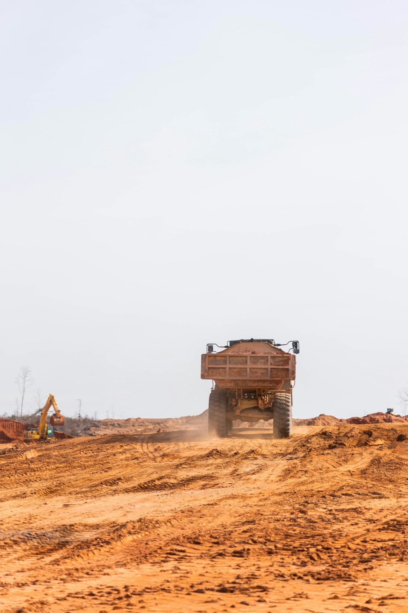
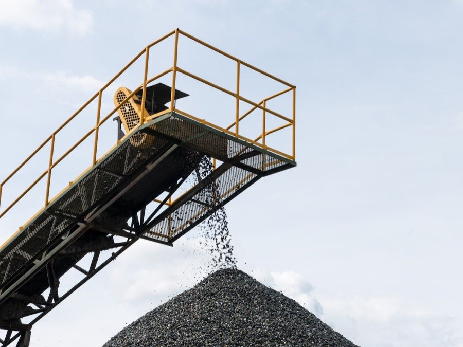

Kontejnerová dopravaPřistavení i odvoz se plánují podle reálného přístupu.
Unhošť a Svárov
V okolí Svárova a Unhoště řešíme přistavení kontejneru, odvoz suti po rekonstrukci, zeminy, odpadu, dřeva i dovoz materiálu. Pro cenu pošlete obec, co se poveze nebo přiveze a fotku místa.
Z terénu
U kontejneru rozhoduje přístup, typ nákladu a bezpečná manipulace na místě. Nejrychleji pomůže obec, krátký popis a fotka místa.
Poslat údaje k nacenění

Když je horší přístup, stání na ulici nebo směsný odpad, fotka ušetří dopisování a pomůže vybrat správný postup.
Svárov, Unhošť, Nouzov, Červený Újezd, Ptice, Pavlov, Kyšice, Malé a Velké Přítočno, Chyňava s Podkozím, Jeneč, Chýně, Rudná a obce na Kladensku řešíme jako prioritní okolí výjezdu.
Rodinné domy, zahrady, rekonstrukce, výkopy, příjezdové cesty, odvoz suti a zeminy i dovoz recyklátu nebo štěrku.
Adresu, co se poveze nebo přiveze, odhad množství, termín, fotku místa a informaci, zda může auto bezpečně zajet až k místu.
Zakázky v blízkém okolí se lépe plánují podle trasy a dostupnosti auta. Neznamená to automaticky nejnižší cenu, ale kratší dojezd může pomoci rychlejší domluvě, hlavně když potřebujete kontejner přistavit nebo odvézt v konkrétní den.
U výkopů, drenáží a příjezdových cest se často nejdřív odváží zemina nebo suť a následně se vozí recyklát, štěrk nebo písek. Když to napíšete rovnou, dá se lépe navrhnout trasa i postup.
Nejrychlejší je zavolat z místa nebo poslat stručnou poptávku. U menších obcí kolem Unhoště je důležitá přesná adresa, protože příjezd, možnost otočení a stání kontejneru mohou výrazně změnit postup.
Dotazy
Ano. Odvoz suti v Unhošti, ve Svárově a okolních obcích řešíme pravidelně. Pošlete adresu, jestli jde o čistou suť nebo směs, přibližné množství a ideálně fotku místa.
Typicky Svárov, Unhošť, Nouzov, Červený Újezd, Ptice, Pavlov, Kyšice, Malé a Velké Přítočno, Chyňavu s Podkozím, Jeneč, Chýni, Rudnou, Kladno a další obce podle trasy a typu zakázky.
Záleží na aktuální trase, typu odpadu, přístupu a termínu. Nejrychlejší je zavolat, protože po telefonu se dá hned ověřit, zda je zakázka reálně proveditelná.
Kratší dojezd může pomoci plánování a dopravě, ale cenu vždy ovlivní také druh odpadu, množství, skládkovné, přístup a termín.
Stačí praktický odhad a fotka. U suti a zeminy je důležitá hmotnost, u dřeva a bioodpadu spíš objem a složení.
Zavolejte a řekněte obec, adresu, co se poveze, množství a místo přistavení. U horšího vjezdu pomůže fotka brány, dvora nebo příjezdové cesty.
Rychlá poptávka
Stačí telefon, obec a co se má odvézt nebo dovézt. Fotka místa nebo odpadu nacenění urychlí. Ozvu se s cenou nebo krátkým doplňujícím dotazem.